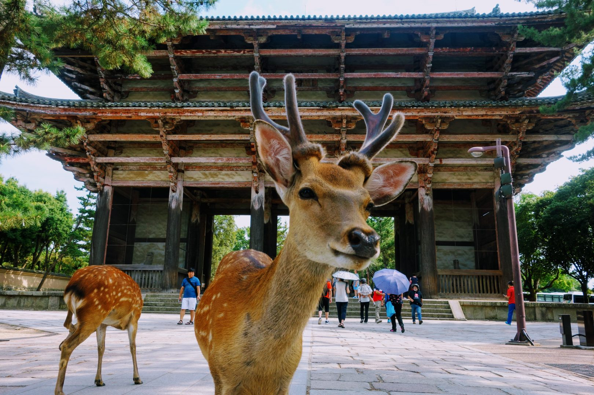
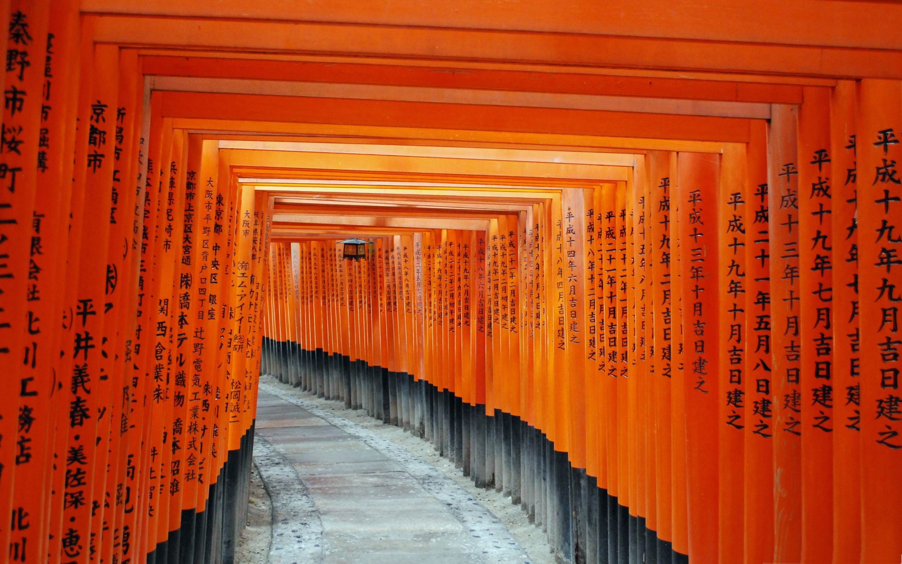
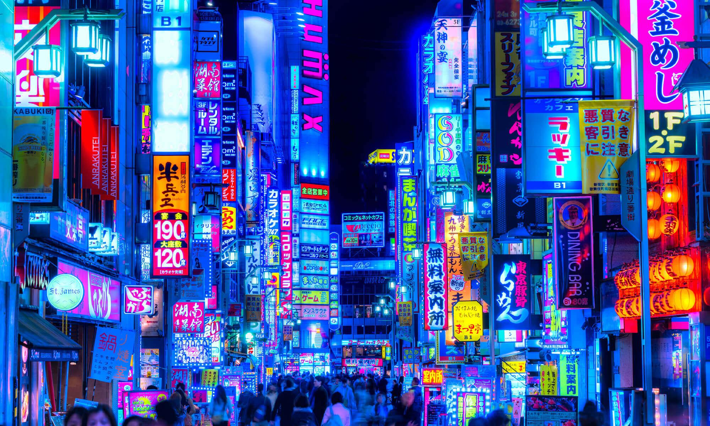

LUGARES INCRÍVEIS DO JAPÃO
Monte Fuji
O Monte Fuji, majestoso e imponente, é o pico mais alto do Japão e um ícone nacional. Sua forma simétrica e coberta de neve inspira tanto admiradores de paisagens quanto aqueles que buscam desafios de escalada. Considerado sagrado, é também um destino espiritual e turístico popular.

Parque de Nara
O Parque Nara, na cidade de Nara, é um espaço sereno e natural, famoso por sua grande população de cervos que circulam livremente. Além de sua beleza paisagística, o parque abriga importantes templos, como o Todai-ji, com a gigante estátua de Buda, criando uma atmosfera tranquila e histórica.
Okinawa
Okinawa é um paraíso tropical no sul do Japão, famoso por suas praias de águas cristalinas, rica cultura e culinária única. Com uma história marcada pela influência de várias culturas, a ilha oferece tranquilidade, além de templos, castelos e vida marinha exuberante.

Santuário Fushimi Inari
Famoso por seus milhares de portões vermelhos (torii), o Santuário Fushimi Inari, em Kyoto, é um dos locais mais emblemáticos do Japão. Dedicado ao deus Inari, ele se estende por montanhas e oferece aos visitantes um passeio místico, repleto de tradição e beleza natural.
Distrito de Shinjuku
Shinjuku é um dos bairros mais vibrantes e dinâmicos de Tóquio. Repleto de arranha-céus, lojas de tecnologia, restaurantes e vida noturna, combina modernidade com cultura tradicional. O bairro é também lar de belos parques e templos, como o Santuário Meiji.
